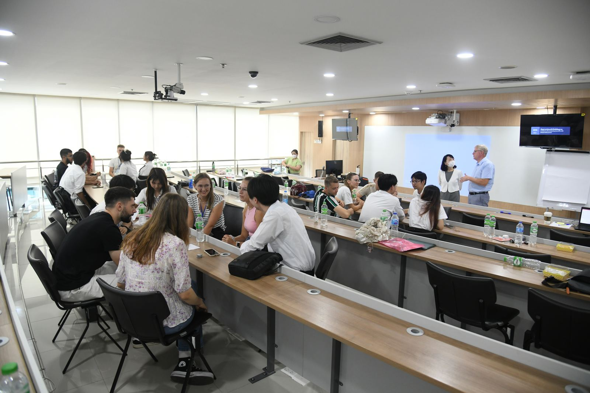
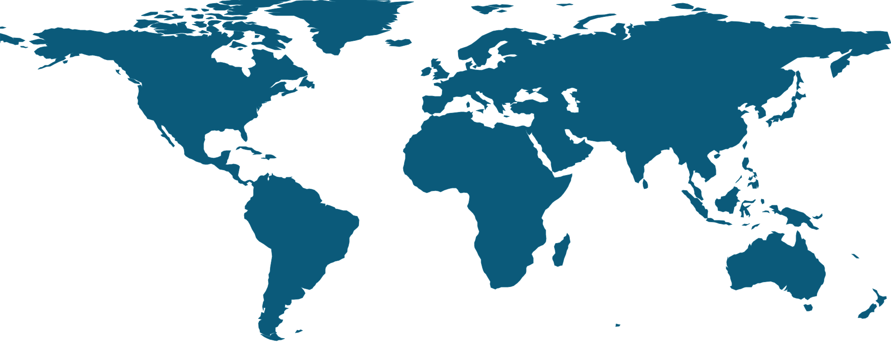
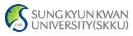
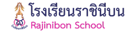
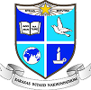
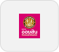

Global Partnerships
International & Partnerships
นานาชาติและความร่วมมือ (MOU)
โอกาสแลกเปลี่ยน เส้นทางปริญญาคู่ และเครือข่ายพันธมิตรทั้งในและต่างประเทศ
Exchange & Double Degree
Exchange 3+1
โครงการแลกเปลี่ยนและปริญญาคู่
โครงการ 3+1 Dual Degree Program เปิดให้นิสิตทุกหลักสูตรของคณะ เรียนที่ มศว 3 ปี และอีก 1 ปีที่มหาวิทยาลัยชั้นนำในสหราชอาณาจักร — นิสิตที่สนใจติดต่องานบริการการศึกษา
ดูหลักสูตรทั้งหมดUniversity of Essex
สหราชอาณาจักร
มหาวิทยาลัยพันธมิตรโครงการ 3+1 Dual Degree
University of York
สหราชอาณาจักร
มหาวิทยาลัยพันธมิตรโครงการ 3+1 Dual Degree
University of Southampton
สหราชอาณาจักร
มหาวิทยาลัยพันธมิตรโครงการ 3+1 Dual Degree
Coventry University
สหราชอาณาจักร
มหาวิทยาลัยพันธมิตรโครงการ 3+1 Dual Degree
Neu-Ulm University of Applied Sciences (HNU)
เยอรมนี
โครงการนิสิตแลกเปลี่ยน (Summer Semester)
Partnerships by Region
Where Our Partners Are
พันธมิตรของเราอยู่ที่ใดบ้าง

- Asia3 ประเทศ · ไทย เกาหลีใต้ ญี่ปุ่น24
Partner Directory
All Partner Organisations
รายชื่อหน่วยงานที่ลงนาม MOU

Sungkyunkwan University (SKKU)สาธารณรัฐเกาหลี- Meiji Universityญี่ปุ่น
- KMITLสถาบันเทคโนโลยีพระจอมเกล้าเจ้าคุณทหารลาดกระบัง
- Faculty of Social Sciences, SWUคณะสังคมศาสตร์ มศว

Rajinibon Schoolโรงเรียนราชินีบน
Sarasas Witaed Nakhon Pathomโรงเรียนสารสาสน์วิเทศนครปฐม- OCSCสำนักงาน ก.พ.
- NRCTสำนักงานการวิจัยแห่งชาติ (วช.)
- NIAสำนักงานนวัตกรรมแห่งชาติ
- ETDAสำนักงานพัฒนาธุรกรรมทางอิเล็กทรอนิกส์
- The Stock Exchange of Thailandตลาดหลักทรัพย์แห่งประเทศไทย

Government Savings Bankธนาคารออมสิน- Thailand Tax Auditor Associationสมาคมผู้สอบบัญชีภาษีอากรฯ
- Office of Social Enterprise Promotionสำนักงานส่งเสริมวิสาหกิจเพื่อสังคม (สวส.)
- Social Value Thailandสมาคมผู้ประเมินมูลค่าทางสังคมไทย
- FlowAccountภาคเอกชน
- Finansiaภาคเอกชน
- Big C Retailภาคเอกชน
- Staybridge Suitesภาคเอกชน
- SOHO Hospitalityภาคเอกชน
- The Blacksmithภาคเอกชน
- NISEภาคเอกชน
- Flora Multi Solutionภาคเอกชน
- Sofitel Bangkok Sukhumvitภาคเอกชน